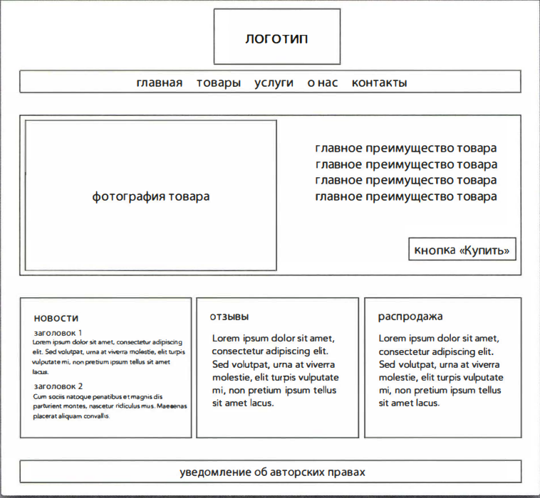

Джон Дакетт. HTML и CSS. Разработка и создание веб-сайтов.
Введение.............................................................7
Структура.......................................................17
Текст................................................................43
Списки............................................................63
Ссылки...........................................................73
Изображения..................................................91
Таблицы........................................................121
Формы...........................................................137
Дополнительная разметка.........................167
Flash, видео- и аудиоконтент.....................189
Введение в CSS............................................213
Цвет...............................................................231
Текст..............................................................247
Блоки.............................................................281
Списки, таблицы и формы.......................309
Макет............................................................335
Изображения................................................381
Макет в HTML5..........................................401
Процесс разработки...................................423
Практическая и нформация.....................445
Структура
- Страницы HTML - это текстовые документы.
- Теги (буквенные последовательности, окруженные двумя угловыми скобками) в языке HTML используются для придания специального значения информации, которую они окружают.
- Теги часто называют «элементами».
- Теги, как правило, парные. Открывающий тег обозначает начало какого-либо участка контента, закрывающий - его окончание.
- Открывающие теги содержат нередко атрибуты, сообщающие дополнительную информацию о содержимом данного элемента.
- Обязательными частями атрибута являются имя и значение.
- Чтобы изучить язык HTML, необходимо запомнить доступные для использования теги, узнать, какие функции они выполняют, а также в какой части НТМL-документа они должны быть использованы.
- структурная разметка - элементы, которые вы можете использовать для описания и заголовков и абзацев.
- семантическая разметка, предоставляющую дополнительную информацию, например на какое слово или словосочетание в предложении делается логическое ударение, является ли какой-то написанный текст цитатой, какова расшифровка акронима и т.д.
Текст
- HTML - элементы используются для описания структуры страницы (например, заголовки, подзаголовки и абзацы).
- Они также могут содержать семантическую (смысловую) информацию (например, в какой позиции нужно поставить логическое ударение, какова расшифровка использованных в тексте акронимов, что данный фрагмент текста является цитатой и т.д.).
- • фрагмент полужирным:
- - чтобы выделить текст <b>полужирным начертанием шрифта</b>;
- - элемент используется для обозначения того, что текст, помещенный в него, имеет высокую <strong>степень важности</strong>;
- • фрагмент курсивным:
- - чтобы отобразить текст с <i>курсивным начертанием шрифта</i>;
- - элемент используется для обозначения <em>логического ударения</em>, которое несколько изменяет значение всего предложения;
- - элемент <cite> может быть использован при оформлении ссылки на какой-то первоисточник, например на книгу, кинофильм или исследовательскую работу, для обозначения упоминаемого источника;
- - oбъяснение нового термина (научного концепта или профессионального жаргонизма) в тексте называется «определением». Элемент <dfn> используется для обозначения определения какого-либо нового термина. В браузерах Safari и Chrome какие-либо изменения шрифта отсутствуют;
-
- цитаты:
- ⁃ элемент <Ьlockquote> используется для отображения длинных цитат, занимающих целый абзац. Обратите внимание, что внутри элемента <Ьlockquote> необходимо использовать и элемент <р>. В большинстве своем браузеры склонны к выделению содержимого элемента <Ьlockquote> отступами, однако этот элемент не стоит использовать только лишь для того, чтобы создать фрагмент текста с отступом: лучше реализовать такое с помощью каскадных таблиц стилей (CSS). Также используется атрибут cite="ссылка на цитату";
- ⁃ элемент <q> принято использовать для более коротких цитат, помещающихся внутри абзаца текста. Также может используется атрибут cite="ссылка на цитату";
- • подстрочные и надстрочные знаки:
- - элемент используется для выделения символов, которые должны быть отображены как <sup>надстрочные</sup>;
- - элемент используется для отображения символов как <sub>подстрочных</sub>;
- • однотеговые, имеют лишь один - закрывающийся тег:
- - перевод строки <br />;
- - добавить в текст горизонтальную линию <hr />;
- • аббревиатуры и акронимы:
- - при употреблении в тексте какого-либо акронима или аббревиатуры следует воспользоваться тегом <abbr>. В открывающем теге можно использовать атрибут title="для указания расшифровки сокращения";
- • контактные данные создателя веб-страницы:
- - E-mail: <a href="mailto:email@gmail.com">email@gmail.com</a>;
- - № telephone: <a href="tel:380930000000">+380930000000</a>;
- - адресс
- • исправление контента
- - элемент используется для отображения <ins> добавленного в документ контента</ins> (или <u> добавленного в документ контента</u>).
-
- элемент используется для отображения <del>
удаленного контента</del> (или <s>удаленного контента</s>).
Списки
- В языке HTML существует три вида списков: упорядоченные, неупорядоченные и списки определений.
- В упорядоченных списках используются цифры.
- В неупорядоченных списках используются маркеры.
- Списки определений применяются для расшифровки терминов.
- Списки могут быть вложены в другие списки.
-
Упорядоченные списки - это списки, каждый элемент которых имеет порядковый номер. Например в качестве такого списка можно представить рецепт какоголибо блюда, шаги которого необходимо выполнять в обозначенной последовательности, либо договор, каждое положение которого необходимо обозначить порядковым номером.
Упорядоченные списки создаются при помощи элемента <ol>. Каждый элемент списка помещается между открывающим тегом <li> и закрывающим тегом <li>. По умолчанию браузеры автоматически расставляют нужные отступы для элементов списков. Aргумент type в элементе <ol>, который используется для указания типа нумерации (буквы, римские и арабские цифры и т.п.). Однако лучше использовать свойство list-type-style каскадных таблиц стилей (CSS), описанное в главе 14. -
Неупорядоченные списки - это списки, рядом с каждым элементом которых помещается маркер (а не цифровые или буквенные символы, обозначающие порядковый номер).
Неупорядоченные списки создаются при помощи элемента <ul>. Каждый элемент списка помещается между открывающим тегом <li> и закрывающим тегом <li>. По умолчанию браузеры автоматически расставляют нужные отступы для элементов списков. Aргумент type в элементе <ul>, который используется для указания типа маркера (круги, квадраты, ромбы). Однако лучше использовать свойство list-type-style каскадных таблиц стилей (CSS), описанное в главе 14. -
Списки определений состоят из набора понятий и сопровождающих их определений.
Список определений создается с помощью элемента <dl> и, как правило, содержит набор понятий и их определений. Внутри элемента <dl> вы зачастую сможете увидеть пары элементов <dt> и <dd>. Используется для обозначения понятия (термина)<dt>, a для определения понятия <dd>. Иногда вы можете столкнуться со списками, в которых два понятия имеют одно определение или где для одного понятия приводится несколько определений.
Ссылки
- Ссылки созданые с помощью элемента <a>.
- Для обозначения адреса страницы, на которую указывает ссылка, используется атрибут href элемента <a>.
- Для создания ссылок на страницы собственного сайта лучше всего использовать относительные URL-адреса.
- Вы можете создавать ссылки, открывающие программу для обмена электронной почтой и заполняющие адресное поле.
- Для обозначения целевых элементов страницы, на которые можно создавать ссылки, пользуйтесь атрибутом id.
Чаще всего вы будете встречаться со ссылками следующих типов:
- ссылки с одного сайта на другой (для безопасного перехода необходимо использовать атрибут со значениями rel="noreferrer nofollow noopener");
- ссылки с одной страницы сайта на другую страницу этого же сайта;
- ссылки с одной части страницы на другую часть этой же страницы;
- ссылки, открывающие новое окно браузера (используют атрибут со значением target="_blank");
-
ссылки, запускающие программы, установленные на вашем компьютере:
- для отправки электронных писем href="mailto:email@gmail.com";
- для звонков href="tel:+380930000000";
- для skype href="skype:login";
- для telegtam href="https://t.me/login";
Изображения
- Для добавления изображений на веб-страницу используется элемент <img>.
- Всегда прописывайте атрибут src для указания расположения изображения и атрибут alt для описания того, что на нем можно увидеть.
- С элементом <img> вы также можете использовать атрибут title для сообщения дополнительной информации об изображении.
- С элементом <img> вы также можете использовать атрибуты width или height для установления соответственно ширины или высоты изображении. При установке одного из атрибутов, второй оптимизируется по соотношению к картинке, чтоб не искожать изображение.
- Перед размещением, запаситесь изображениями нужного размера и формата.
- Фотографии лучше всего сохранять в формате JPEG, иллюстрации и логотипы с однотонными областями - в формате GIF, SVG.
- Формат SVG (Scalable Vector Graphics - масштабируемая векторная графика) используется для непосредственного отображения векторной графики на сайтах (без необходимости создания растровых копий).
- Зачастую изображения сопровождаются подписями. В спецификации HTMLS - элемент <figure>, объединяющий изображение и подпись к нему, таким образом текст и рисунок оказываются связанными друг с другом. В один элемент <figure> можно включить несколько изображений, в случае если для них используется одна подпись. Элемент <figcaption> был включен в язык HTML5, чтобы позволить веб-дизайнерам добавлять подписи к публикуемым изображениям. До введения этих двух элементов связать изображение <img> с текстом было невозможно.
- Для добавления изображений на страницу вы также можете воспользоваться свойством background-image каскадных таблиц стилей (CSS), с которым познакомитесь в дальнейшем.
- На сайте www.Htmlandcssbook.com размещена онлайн-галерея, которая поможет вам выбрать правильное изображение для вашего сайта.
- Устаревший способ выранивания изображения по горизонтали - использование атрибута align со значением left, что выравнивает изображение по левому краю (позволяя тексту обтекать его справа), или right, что выравнивает изображение по правому краю (позволяя тексту обтекать его слева). О том, как вставить небольшой промежуток между изображением и текстом с помощью свойств padding и margin каскадных таблиц стилей (CSS), вы прочитаете в главе 13.
- Устаревший способ выранивания изображения по вертикали - использование атрибута align со значением top, что выравнивает первую строку текста с верхней границей изображения, middle, что устанавливает выравнивание первой строки текста относительно середины изображения, или bottom, что выравнивает первую строку текста относительно нижней границы изображения. О том, как вставить небольшой промежуток между изображением и текстом с помощью свойств padding и margin каскадных таблиц стилей (CSS), вы прочитаете в главе 13. Если вы хотите, чтобы не только первая строка, но и весь текст обтекал изображение, то вам нужно будет воспользоваться свойством float каскадных таблиц стилей, о котором вы можете прочитать в главе 15
- изображения должны:
- быть к месту;
- нести информацию;
- создавать правильное настроение;
- быть легкоузнаваемыми;
- соответствовать цветовой палитре сайта.
- стоковые фотохостинги:
- расположение изображения в коде:
- перед абзацем (абзац начинается с новой строки после изображения);
- в начале абзаца (первая строка текста выравнивается относительно нижнего края изображения);
- в середине абзаца (изображение помещается в текст абзаца, в котором говорится о нем);
- редакторы:
- Adobe Photoshop
- Adobe Fireworks
- Pixelmator
- PaintShop Pro
- Paint.net
- онлайн-редакторы:
Таблицы
- Для добавления таблицы на веб-страницу используется элемент <table>.
- Таблица размещается на странице построчно. Каждая строка создается с помощью элемента <tr>.
- Внутри каждой строки есть несколько элементов <td>, представляющих ячейки (или элементов <th>, если данная строка - это шапка таблицы).
- С помощью атрибутов rowspan и colspan можно объединить несколько ячеек по вертикали или по горизонтали соответственно.
- При создании длинной таблицы вы можете разбить ее содержимое на заголовок <thead>, тело <tbody> и последнюю строку <tfoot>.
- Старый код ширины и промежутков. Существует несколько устаревших атрибутов, вытесненных каскадными таблицами стилей (CSS). Атрибут width используется в открывающем теге <table> для указания ширины таблицы. Кроме того, его можно ставить в открывающих тегах элементов <th> и <td> для задания ширины отдельных ячеек таблицы. Так как столбцы таблицы должны быть ровными, то чаще всего вы встретите данный атрибут только в первой строке таблицы (все последующие строки наследуют это значение). В открывающем теге элемента <table> также может быть указан атрибут cellpadding, добавляющий промежуток между границами ячейки и ее содержимым, а также атрибут cellspacing, задающий величину промежутка между ячейками таблицы.
- Старый код границы и заливки: атрибут border используется с элементами <table> и <th> для установки ширины границы в пикселах. Атрибут bgcolor используется для установки цвета всей таблицы либо отдельных ячеек. Его значением, как правило, является шестнадцатеричный код цвета (который мы обсудим в главе 11).
Формы
-
Для сбора данных с посетителей вашего сайта вам понадобится создать веб-форму, все элементы которой должны находиться между тегами <form> и </form>. Для него всегда должен быть указан атрибут action (значением которого является URL-aдpec страницы-получателя введенных данных при отправке формы на сервер), кроме того, для этого элемента часто устанавливают атрибуты id (обсудим в главе 8) и method="":
- "get":
- для коротких форм (таких как поля для ввода поискового запроса);
- при простом получении данных с веб-сервера (без отправки сведений, добавляемых в базу данных).
- "post":
- позволяет пользователям загружать файлы на сайт;
- очень длинная;
- содержит конфиденциальные данные (например, пароли);
- добавляет сведения в базу данных или удаляет их оттуда.
- "get":
-
У каждого элемента формы должна быть своя надпись (метка), создаваемая при помощи элемента <label>, можно использовать двумя способами:
- окружить им и метку и сам элемент формы
- указать отдельно от элемента формы, но при этом использовать атрибут for, указав в значение id необходимого элемента.
- Каждому элементу формы присваивается имя(name=""). Текст, вводимый посетителями, или варианты ответа, выбираемые ими, отправляются на сервер.
- Группируются элементы формы, связанные по смыслу, тегом <fieldset>. Элемент <legend>, содержащий надпись для обозначения группы элементов формы, как правило, помещают сразу после открывающего тега элемента <fieldset>.
- Для запроса ввода даты вы можете использовать элемент <input> с атрибутом и значением date="type".
- Для создания поля поискового запроса на языке HTML5 присвойте атрибуту type элемента <input> значение search.
- С любым полем ввода вы можете использовать атрибут placeholder, значением которого является текст, отображаемый в поле до того, как пользователь введет свой запрос.
- Информация, введенная с помощью элементов формы, отправляется на сервер в виде пар "имя/значение".
- Формы, выводящие предупреждения в случае, если не все поля были правильно заполнены, называется валидацией данных формы, атрибут required (используемый с любым элементом формы). Традиционно валидация введенных данных осуществляется с помощью специальных сценариев JavaScript.
- Eсли необходимо, чтобы посетитель сайта видел сразу все варианты ответа, то лучше использовать переключатели; если список вариантов достаточно длинный (как, например, список стран), то лучше подходит раскрывающийся список.
- Вы можете использовать атрибут maxlength для ограничения количества символов, которое посетителю разрешается ввести в данное поле.
- При создании новых форм не следует указывать атрибут size. Для управления шириной элементов новых форм рекомендуется использовать средства каскадных таблиц стилей (CSS).
- При создании новой формы используйте правила CSS для установки ширины и высоты текстовой области. Однако при просмотре исходного кода старых сайтов вы можете встретить атрибуты cols="" и rows="".
Элементы формы:
-
Ввод текста <input>
- ✓ Поле ввода текста tуре="text"
- - Позволяет ввести строку текста, например, имя пользователя (name="username").
- ✓ URL-aдpecoв type="url"
- - Браузеры, поддерживающие язык HTML5, проверят, соответствует ли введенный посетителем адрес принятому стандарту для данного типа адресов (name="sait"").
- ✓ Поле ввода адресoв электронной почты type="email"
- - Браузеры, поддерживающие язык HTML5, проверят, соответствует ли введенный посетителем адрес принятому стандарту для данного типа адресов (name="email"").
- ✓ Поле ввода пароля type="password"
- - Оно аналогично полю ввода текста с той лишь разницей, что поле ввода пароля name="password" скрывает вводимые символы от посторонних глаз.
- ✓ Текстовая область <textarea>(многострочное поле ввода текста)
- - Данная разновидность поля используется для отправки более длинного текста, например сообщения name="messages" или комментария name="comments".
-
Выбор вариантов:
- ✓ Переключатели type="radio"
- - Используются, когда пользователь должен выбрать только один вариант из нескольких представленных (все переключатели, формирующие список ответов, должны иметь одинаковое значение атрибута name; aтрибут vаluе устанавливает значение выбранного переключателя, оmравляемое серверу; не обязательный aтрибут checked(установлен) принимает единственное значение - checked).
- ✓ Флажки type="checkbox"
- - Используется, когда пользователь может выбрать несколько вариантов из предложенных либо не выбрать ни одного (все переключатели, формирующие список ответов, должны иметь одинаковое значение атрибута name; aтрибут vаluе устанавливает значение выбранного переключателя, оmравляемое серверу; не обязательный aтрибут checked(установлен) принимает единственное значение - checked).
- ✓ Раскрывающиеся списки <select>
- - Используются, когда пользователь должен выбрать один вариант из списка (который вносится в элемент <option> и используется для указания вариантов ответа, которые может выбрать посетитель сайта; aтрибут value используется для установки значения, отправляемого на сервер вместе с именем выбранного элемента; не обязательный aтрибут selected устанавливает вариант ответа, который должен быть выбран по умолчанию во время загрузки страницы, принимает единственное значение - selected).
- - Добавив aтpибyт multiple="multiple" в <option> вы позволите посетителям вашего сайта выбирать сразу несколько вариантов ответа.
-
Загрузка файлов на сайт type="file"
- ✓ Загрузка файлов (указывайте method="post" элемента <form>)
- - Данный элемент формы позволяет пользователям загружать на сайт файлы.
-
Отправка форм на сервер (кнопки):
- ✓ Кнопка подтверждения type="submit"
- - Кнопка подтверждения используется для отправки введенных данных формы на другую веб-страницу (aтрибут vаluе используется для указания текста надписи на кнопке).
- ✓ Графические кнопки type="image"
- - Они аналогичны обычным кнопкам подтверждения, но вместо стандартного изображения можно использовать собственное ( атрибуты src, width, height и alt будут работать точно так же, как и для элемента <img>).
- ✓ Кнопки и скрытые элементы формы
- - Элемент <Ьuttоn> был добавлен, чтобы позволить разработчикам сайтов получить более полный контроль над внешним видом кнопок, а также сделать возможным появление внутри кнопки других элементов. Это значит, что теперь вы можете сочетать на кнопке текст и изображение
- - Скрытые элементы type="hidden" не отображаются, хотя вы и можете увидеть их при просмотре исходного кода страницы. Они позволяют веб-дизайнерам размещать в форме данные, невидимые посетителям. Например разработчик может сохранить в скрытом поле информацию о том, с какой страницы посетитель отправил форму на сервер.
-
Для сбора данных с посетителей вашего сайта вам понадобится создать веб-форму, все элементы которой должны находиться между тегами <form> и </form>. Для него всегда должен быть указан атрибут action (значением которого является URL-aдpec страницы-получателя введенных данных при отправке формы на сервер), кроме того, для этого элемента часто устанавливают атрибуты id (обсудим в главе 8) и method="":
Дополнительная разметка
- Объявления DOCTYPE сообщают браузеру, какая версия языка HTML используется.
- Вы можете добавлять в код коментарии, помещая текст между символами <!-- и --> (проще клавишами CTRL + /).
- Атрибуты id (уникальный или называют глобальным) и class(если вы желаете указать, что какой-либо элемент относится к нескольким классам, то вы можете перечислить имена классов через пробел) позволяют идентифицировать конкретные элементы разметки.
- Элементы <div> и <span> позволяют группировать блочные (<h1>, <p>, <div>, <ul>, <li> и т.д.) и встроенные (строчные) элементы (<a>, <b>, <img> и т.д.).
- Элемент <iframe> превращает на странице окно, в котором могут быть видны другие страницы. Атрибут src используется для указания URL-aдpeca страницы, отображаемой во фрейме, height - устанавливает высоту окна плавающего фрейма в пикселах, width - ширину, атрибут seamless веб-сервера когда полосы прокрутки на экране не нужны.
-
Тег <meta> позволяет предоставить всю информацию о странице по атрибутам:
- description - используется поисковыми системами для определения, чему та посвящена;
- keywords - параметр должен содержать список ключевых слов, разделенных запятой, которые посетитель может использовать для поиска нужной информации;
-
robots - свойство показывает, должны ли поисковые системы включать данную страницу в результаты поиска:
- - noindex для запрета добавления страницы в результаты;
- - nofollow поисковые системы могут включать данную страницу в результаты поиска, но не должны показывать страницы, на которые ведут ссылки с нее.
-
http-equiv="" (и с content=""):
- - author для указания имени автора веб-страницы;
- - pragma предотвращает кэширование страницы браузером;
- - expires для указания того, когда у страницы должен истечь срок актуальности (и она должна быть удалена из кэша). Обратите внимание, что дату нужно указывать строго в формате, например, content="Fri, 04 Apr 2014 23 : 59 : 59 GMT".
- Для отображения на странице специальных знаков, таких как <, > или ©, используются специальные символы-мнемоники.
- Каждый элемент должен иметь закрывающий тег (за исключением пустых элементов наподобие <img />).
- Имена атрибутов следует писать строчными буквами.
- Все атрибуты должны иметь значение, заключенное в двойные кавычки.
- Устаревшие элементы использовать нельзя.
- Любой элемент, открытый внутри другого элемента, должен быть закрыт внутри него же.
Flash, видео- и аудиоконтент
- Технология Flash позволяет добавлять на веб-страницы анимацию, видео- и аудио-контент.
- Технология Flash не поддержи вается на устройствах iPhone и iPad.
- HTML5 поддерживает элементы <video> и <audio>, позволяющие добавлять на веб-страницы видео- и аудиофайлы.
- Не все браузеры, поддерживающие HTML5, могут воспроизводить аудио- и видеофайлы одинаковых форматов, поэтому вам необходимо предоставлять файлы разных форматов, чтобы все посетители вашего сайта могли просмотреть или прослушать их.
- Есть несколько популярных видеоформатов которые необходимо предоставить браузеру на выбор: webm, mp4 и ogg, в виде type="video/формат_видео".
- Все современные браузеры гарантированно поддерживают один из двух форматов: mp3 или ogg.
- Независимо от того, создаете вы анимацию или мультимедийный проигрыватель средствами Flash (программное обеспечение Adobe Flash Professional), файлы, загружаемые вами на сайт, называются Flаsh-роликами. Файл FLA экспортируется в формат SWF для дальнейшего использования на веб-странице, SWF подключается к странице с помощью сценария, написанного на языке JavaScript.
- Для просмотра Flаsh-роликов в браузере должно быть установлено дополнительное программное обеспечение (плагин), называемое Flash Player.
-
Элемент <video> обладает целым набором атрибутов, позволяющих управлять воспроизведением видеоролика:
-
src позволяет указать расположение нужного видеофайла;
-
✓ Для указания расположения видеофайла вы можете воспользоваться элементом <source> (помещаемым внутрь элемента <video>, призван заменить атрибут src тега <video>) с атрибутами:
- - src служит для указания пути к видеофайлу;
- - type для указания формата видеофайла, в противном случае браузер загрузит часть видеофайла, чтобы проверить возможность воспроизведения, что займет некоторое время и повлечет лишний расход трафика;
- - codecs - в атрибуте type необходимо указать кодек для конвертирования видео. Обратите внимание на использование двойных и одинарных кавычек при указании атрибута type (type='video/mp4; codecs="avcl.42E01E,mp4a.40.2" ').
- ✓ Для обозначения того, что видеоролик доступен в нескольких форматах, вы можете использовать несколько элементов <source>;
- ✓ Из-за ошибки в программном обеспечении планшета iPad видеофайл может не воспроизводиться, если в качестве первого источника не указан видеоролик в формате МР4.
-
✓ Для указания расположения видеофайла вы можете воспользоваться элементом <source> (помещаемым внутрь элемента <video>, призван заменить атрибут src тега <video>) с атрибутами:
- poster позволяет установить изображение, показываемое в процессе загрузки видеоконтента и до момента, пока посетитель не начнет воспроизведение ролика;
-
preloaded дает браузеру инструкцию, что следует сделать при загрузке страницы. Он может принимать одно из следующих трех значений:
- - none браузер не должен начинать загрузку видеоролика, пока пользователь не щелкнет мышью по кнопке Воспроизведение;
- - auto браузер должен загрузить видеоролик по окончании загрузки страницы;
- - metadata браузер должен лишь собрать такую метаинформацию, как размер видео, первый кадр, список воспроизведения и длительность;
- width, height определяют размеры окна проигрывателя в пикселах;
- controls используется, если требуется, чтобы браузер предоставил собственные элементы управления воспроизведением;
- autoplay используется, если требуется, чтобы видеоролик автоматически начинал воспроизводиться после загрузки;
- loop используется, если требуется, чтобы проигрыватель автоматически повторял воспроизведение видеоролика.
-
src позволяет указать расположение нужного видеофайла;
-
Для элемента <audio> был создан ряд атрибутов, позволяющих управлять воспроизведением аудиозаписи:
-
src определяет путь к нужному аудиофайлу;
-
✓ С помощью элемента <source>, помещаемого между открывающим <audio> и закрывающим </audio> тегами, можно указать несколько аудиофайлов, используемых проигрывателем (вместо использования атрибута src элемента <audio>):
- - src используется для указания местоположения нужного файла;
- - type;
-
✓ С помощью элемента <source>, помещаемого между открывающим <audio> и закрывающим </audio> тегами, можно указать несколько аудиофайлов, используемых проигрывателем (вместо использования атрибута src элемента <audio>):
- controls указывает, должен ли проигрыватель отображать элементы управления воспроизведением. По умолчанию при его отсутствии элементы управления отображены не будут. С помощью языка JavaScript вы также можете настроить отображение ваших собственных элементов управления;
- autoplay указывает, что проигрывание аудиозаписи должно начинаться автоматически. (Однако рекомендуется позволить посетителям самостоятельно включать воспроизведение);
-
preload указывает, какие действия должен выполнять браузер, если для проигрывателя не указан атрибут autoplay:
- - none браузер не должен начинать загрузку аудиоролика, пока пользователь не щелкнет мышью по кнопке "Воспроизведение";
- - auto браузер должен загрузить аудиоролик по окончании загрузки страницы;
- - metadata браузер должен лишь собрать такую метаинформацию, как размер аудио, список воспроизведения и длительность;
- loop указывает, что по завершении воспроизведения аудиофайла оно должно автоматически начаться вновь.
-
src определяет путь к нужному аудиофайлу;
Введение в CSS
- CSS обращается с каждым элементом HTML так, будто он заключен в блок, и использует правила, чтобы указать, как этот элемент должен выглядеть.
- Правила состоят из селекторов, определяющих элементы, к которым применяется правило, и объявлений, указывающих, как эти элементы должны выглядеть.
- Различные типы селекторов позволяют применять правила к разным элементам.
- Объявления состоят из двух частей: свойств элемента, которые вы хотите изменить, и значений этих свойств, разделенных двоеточием. В одном объявлении вы можете указать несколько свойств, отделив их друг от друга точкой с запятой.
- Правила CSS обычно помещаются в отдельный документ (используется элемент <link>, указывающий, где находится файл CSS), хотя и могут быть указаны в коде HTML-страницы(поместив их внутри элемента <style>, который обычно находится в элементе <head>, использовать атрибут type="text/css").
- В коде НТМL-страницы можно использовать более чем одну таблицу стилей. В этом случае для каждого файла CSS необходимо указать отдельный элемент <link>. Например некоторые дизайнеры используют один файл CSS для форматирования (например, шрифтами и цветами), а второй - для управления макетом.
-
Если к одному и тому же элементу применяется два или более правил, важно понимать, которое из них получит приоритет.
- Правило последнего. При наличии двух одинаковых селекторов приоритет получает последний.
- Специфичность. Если один селектор является более специфичным, чем остальные, то он получает приоритет.
- Важность. Вы можете добавить текст !important после значения любого свойства, чтобы указать, что его следует считать самым важным из правил, относящихся к одному и тому же элементу.
- Если свойства монут наследоватся, то они применятся к дочерним элементам.
-
Элемент <link> в НТМL-документе сообщает браузеру, где находится файл CSS, используемый для форматирования страницы. Это пустой элемент (он не нуждается в наличии закрывающего тега), который располагается внутри элемента <head>. Элемент <link> должен использовать три следующих атрибута:
- href указывает путь к файлу CSS, который часто расположен в папке с именем css или styles;
- type данный атрибут определяет тип документа, на который указывает ссылка. Должно быть указано значение text/css;
- rel oпределяет отношение между НТМL-страницей и связанным файлом. При создании ссылки на файл CSS должно быть указано значение stylesheet;
-
Селекторы CSS чувствительны к регистру, поэтому они должны точно соответствовать именам элементов и значениям атрибутов. Существуют более продвинутые селекторы.
SELECTOR MEANING EXAMPLE УНИВЕРСАЛЬНЫЙ СЕЛЕКТОР Применяется ко всем элементам в документе * { }
Все элементы страницыСЕЛЕКТОР ТИПА Соответствует именам элементов h1, div , a { }
Элементы <h1>, <div> и <a>СЕЛЕКТОР КЛАССА Соответствует элементу, чей атрибут class имеет значение,
совпадающее с указанным после точки.note { }
Элемент, чей атрибут class имеет значение note
p .note { }
Только элементы <p>, чьи атрибуты class имеют значение noteСЕЛЕКТОР ИДЕНТИФИКАТОРА Соответствует элементу, чей атрибут id имеет значение,
совпадающее с указанным после символа ##top
Элемент, чей атрибут id имеет значение topДОЧЕРНИЙ СЕЛЕКТОР Соответствует элементу, являющемуся прямым потомком другого элемента li > a { }
Элементы <а>, являющиеся прямыми потомками элемента <li>,
но не остальные элементы <а> на страницеСЕЛЕКТОР ПОТОМКА Соответствует элементу, являющемуся потомком другого элемента
(не обязательно прямым)p a { }
Любые элементы <а>, располагающиеся внутри <p>, даже в том случае,
когда между ними находятся другие элементыСЕЛЕКТОР СЕСТРИНСКОГО ЭЛЕМЕНТА Соответствует элементу, являющемуся сестринским по отношению
к другому элементуh1+p { }
Первый элемент <p>, располагающийся после любого элемента <h1>,
но не любые другие элементы <p>СЕЛЕКТОР ОБОБЩЕННЫХ РОДСТВЕННЫХ ЭЛЕМЕНТОВ Соответствует элементу, являющемуся сестринским по отношению к другому элементу, хотя не обязательно расположенному перед ним h1~p { }
Если бы у вас было два элемента <p>, являющихся сестринскими по отношению к элементу <h1>, , то это правило бы применялось к обоим
Цвет
- Цвет не просто оживляет сайт, но и позволяет создать настроение и вызвать определенную реакцию.
- Спецификация CSS предусматривает три способа задания цвета: через значения RGB, шестнадцатеричные коды и имена.
- Чтобы найти нужный цвет, вы можете воспользоваться цветовой палитрой.
- Важно обеспечить контраст между цветом текста и цветом фона, в противном случае пользователям будет сложно воспринимать ваш контент.
- В спецификации CSS3 для RGB предусмотрено дополнительное значение, указывающее степень непрозрачности. Оно известно как RGBA.
- Спецификация CSS3 также позволяет указывать цвета с помощью значений HSL с дополнительным значением степени непрозрачности. Данный способ известен как HSLA.
- При выборе основного и фонового цветов важно обеспечить достаточный контраст, чтобы текст был читаемым.
- Для упрощения восприятия светлого текста на темном фоне можно увелич ить междустрочный интервал или вес шрифта.
-
Свойство color позволяет указать цвет текста внутри элемента. В CSS вы можете задать любой цвет одним из трех способов:
- RGB (red, green, blue) и значения выражают цвет в пропорциях красного, зеленого и синего;
- шестнадцатеричные коды определяющие количество красного, зеленого и синего цвета, в записи им предшествует символ решетки #;
- имена цветов cуществует 147 предопределенных имен цветов, которые распознаются браузерами;
- Цвет фона задает background-color.
-
Технически цвет состоит из:
- цветовой тон близок к понятию цвета;
- насыщенность определяется количеством серого цвета (при максимальной - отсутствует серая составляющая, при малой - серый будет преобладать);
- яркость определяется количеством черного цвета (при максимальной - отсутствует, при минимальной - цвет будет очень темным);
-
Cтепень непрозрачности. Значением является число в диапазоне от 0,0 до 1,0:
- Свойство rgba позволяет указать цвет так же, как и rgb, однако добавляет четвертое значение для указания степени непрозрачности, влияет только на тот элемент, к которому оно применяется. Данный параметр, известный как альфа-канал;
- Свойство opacity позволяет указать элемент и любого из его дочерних элементов;
-
hsl, hsla бавлено в спецификации CSSЗ в качестве альтернативного способа указания цвета:
- оттенок выражается как значение угла в диапазоне от 0 до 360 градусов;
- насыщенность выражается в процентах;
- светлота принимает процентные значения: 0% - белый, 50% - нормальный цвет, 100% - черный;
- альфа принимает значения в диапазоне от 0 до 1,0.
Текст
- Существуют свойства, позволяющие выбирать шрифт, управлять его размером, весом, стилизовать и устанавливать различные интервалы.
- Существует небольшое количество шрифтов, в наличии которых на компьютере пользователя вы можете быть уверены. Можно указать несколько гарнитур шрифтов на случай, если у пользователя не установлена гарнитура, указанная первой, этот прием называется последовательностью шрифтов, если имя шрифта состоит более чем из одного слова, то его нужно указывать в кавычках, в конце следует добавить общее название типа гарнитур.
- Есть несколько методов, позволяющих использовать более широкий спектр гарнитур шрифтов, однако они требуют наличия определенных лицензий.
- Вы можете контролировать расстояние между строками текста, отдельными буквами и словами.
- Текст выравнивается по левому краю, по правому, по центру или по ширине строки. Также текст может иметь отступы.
- Псевдоклассы используются, чтобы стиль элемента менялся при наведении на него указателя мыши, при клике, а также для выделения посещенной ссылки.
-
Терминология типографики:
-
гарнитура шрифта или семейство шрифтов font-family:
- Шрифт с засечками (Serif) имеют дополнительные элементы по краям основных штрихов, традиционно используются для оформления больших объемов текста, поскольку считается, что они облегчают чтеине (Georgia, 'Times New Roman', Times);
- Рубленый шрифт (Sans-Serif), также называемые гротесками, характеризуются прямыми краями букв, при небольшом размере шрифта текст воспринимается легче (Arial, Verdana, Helvetica);
- Моноширинный шрифт (Monospace) - все буквы имеют одинаковую ширину (у букв в других шрифтах она разная), как правило, используются при написании кода, поскольку они легко выравниваются, что делает текст более удобным для восприятия (Courier, 'Courier New');
- Kурсивный шрифт ('Cosmic Sans MS', 'Monotype Corsiva')
- Декоративный шрифт (Impact, Haettenschweiler)
-
вид текста и букв:
-
вес font-weight добавляет акцент, влияет на пустое пространство и контраст на странице:
- - тонкий;
- - средний normal;
- - полужирный bold;
- - жирный;
-
стиль font-style:
- - обычный normal;
- - курсивный italic - специально спроэктированный шрифтовой набор;
- - наклонный oblique - результат деформации обычного шрифта;
-
плотность font-stretch:
- - сжатый - буквы тоньше и расположены ближе друг к другу;
- - обычный;
- - растянутый - буквы толще и асположены дальше друг от друга;
-
вес font-weight добавляет акцент, влияет на пустое пространство и контраст на странице:
-
гарнитура шрифта или семейство шрифтов font-family:
-
Размер шрифта font-size позволяет указать размер шрифта, существует несколько способов:
- Значения в пикселах используются часто, поскольку такой подход предоставляет веб-дизайнерам очень точный контроль над тем, сколько места будет занимать их текст. Числовое значение сопровождается буквами рх;
- Проценты. По умолчанию размер текста в браузерах равен 16рх. Таким образом, значение 75% соответствует 12рх, а 200% - 32рх. Если вы создадите правило, задающее всему тексту внутри элемента <body> значение 75% от размера по умолчанию (что соответствует 12рх), а затем создадите еще одно правило, которое задает значение 75% для содержимого элемента, вложенного в <body>, то размер шрифта в этом элементе будет равен 9рх (75% от 12рх).
- Единицы em - это единица измерения, эквивалентная ширине буквы m (1em = 100%).
-
Дополнительные шрифты.
- Сервис Google предоставляет бесплатные шрифты. Вместо добавления правила @font-face в таблицу стилей вам нужно будет вставить ссылку на файл CSS и на файлы шрифтов на сервере сервиса www.google.com/webfonts.
-
Свойство @font-face { } позволяет использовать шрифт, даже если он не установлен на компьютере пользователя, предоставляя путь к файлу шрифта, который в этом случае будет загружен:
- font-family позволяет указать имя шрифта, затем оно может быть использовано в качестве значения свойства font-family в остальной части таблицы стилей;
- src определяет путь к файлу шрифта;
- format oпределяет формат, в котором поставляется шрифт;
-
Форматирование:
-
Свойство text-transform используется для изменения регистра текста и принимает одно из следующих значений:
- uppercase для всех символов в тексте используется верхний регистр;
- lowercase для всех символов в тексте используется нижний регистр;
- capitalize каждое слово начинается с прописной буквы;
-
Свойство text-decoration принимает следующие значения:
- none сбрасывает любое примененное к тексту оформление;
- underline добавляет линию под текстом;
- overline добавляет линию над текстом;
- line-through добавляет линию, проходящую через слова;
- blink заставляет текст мигать (oбычно эта практика не одобряется, поскольку такое поведение текста считается весьма раздражающим);
-
Свойство text-transform используется для изменения регистра текста и принимает одно из следующих значений:
-
Интервалы (значение свойств лучше указывать в единицах em, а не в пикселах, чтобы межстрочный интервал соотносился с размером текста, выбранным пользователем):
- Межстрочный интервал line-heiqht - это типографский термин, обозначающий расстояние между строками текста. Часть символа, которая располагается ниже базовой линии, называется нмжнмм выносным элементом, в то время как самая высокая точка символа называется верхним выносным элементом. Межстрочный интервал измеряется от нижней части нижнего выносного элемента на одной строке до верхней части верхнего выносного элемента на следующей строке;
- Кернинг - это термин, используемый в типографии для обозначения интервала между буквами. Вы можете управлять им с помощью свойства letter-spacing;
- Контролировать интервал между словами также позволяет свойство word-spacing.
-
Выравнивание текста text-aliqn:
- left - по левому краю;
- right - по правому краю;
- center - по центру;
- justify - каждая строка абзаца, за исключением последней, должна занимать всю ширину текстового поля;
-
Вертикальное выравнивание vertical-aliqn часто вводит в заблуждение, оно не предназначено для вертикального выравнивания текста в блочных элементах, хотя и производит этот эффект при использовании с ячейками таблицы (элементами <td> и <th>). Чаще данное свойство используется со встроенными элементами, такими как <img>, <em> или <strong> - в этом случае оно выполняет задачи, очень похожие на задачи НТМL-атрибута align, применяемого к элементу <img>, о котором вы узнали в главе 5. Данное свойство может принимать следующие значения:
- baseline;
- sub;
- super;
- top;
- text-top;
- middle;
- bottom;
- text-bottom;
- Свойство text-indent позволяет создать отступ для первой строки текста внутри элемента, указывается в пикселах или единицах em, способно принимать и отрицательные значения, что означает возможность размещения текста за пределами окна браузера.
-
Свойство text-shadow используется для создания тени, представляющей собой более темную и слегка смещенную версию слова, расположенную позади него. Для создания тени свойству нужно сообщить довольно сложное значение, состоящее из трех длин и цвета тени:
- Первое значение длины указывает, насколько далеко влево или вправо должна падать тень;
- Второе значение указывает, на какое расстояние вверх или вниз должна смещаться тень;
- Третье значение необязательно и определяет степень размытия, применяемого к тени;
- Четвертое -это цвет тени;
-
Псевдоэлемент указывается в конце селектора, а за ним следуют объявления, как в любом другом элементе.
-
Вы можете задать различные значения первой/последней букве или первой/последней строке текста внутри элемента с помощью:
- :first-letter;
- :last-letter;
- :first-line;
- :last-line;
-
Применение стилей к ссылкам (при использовании псевдоклассы должны перечисляться в следующем порядке):
- :link позволяет применить стиль к еще не посещенной ссылке;
- :visited позволяет применить стиль к ссылке, по которой пользователь уже щелкнул; Реагирование на действия пользователя:
- :hover применяется, когда пользователь наводит на элемент указатель мыши;
- :focus применяется, когда элемент имеет фокус. Любой элемент, с которым вы можете взаимодействовать, например ссылка или элемент формы, способен иметь фокус;
- :active применяется, когда элемент активируется пользователем, например путем нажатия кнопки или щелчка по ссылке;
-
Вы можете задать различные значения первой/последней букве или первой/последней строке текста внутри элемента с помощью:
СЕЛЕКТОР ОПРЕДЕЛЕНИЕ ПРИМЕР СУЩЕСТВОВАНИЯ АТРИБУТА [ ]
Соответствует конкретному атрибуту независимо от его значенияр [class]
Любой элемент <р> с атрибутом classРАВЕНСТВА АТРИБУТА [=]
Соответствует конкретному атрибуту с конкретным значениемp [class="dog"]
Любой элемент <р> с атрибутом class, значение которого - dоgАТРИБУТА С ПРОБЕЛАМИ [~=]
Соответствует конкретному атрибуту, чье значение присутствует в списке слов,
разделенных пробеламир [class~="dog"]
Любой элемент <р> с атрибутом class, значением которого является
список разделенных пробелами слов, среди которых присутствует dogПРЕФИКСА АТРИБУТА [^=]
Соответствует конкретному атрибуту, чье значение начинается с конкретной строкир [attr^"d"]
Любой элемент <р> с атрибутом, значение которого начинается с буквы dПОДСТРОКИ АТРИБУТА [*=]
Соответствует конкретному атрибуту, чье значение содержит конкретную подстрокуp [attr*"do"]
Любой элемент <р> с атрибутом, значение которого содержит буквы doСУФФИКСА АТРИБУТА [$=]
Соответствует конкретному атрибуту, чье значение заканчивается конкретной строкойp [attr$"g"]
Любой элемент <р> с атрибутом, значение которого заканчивается буквой g
Блоки
- Правила CSS обращаются с каждым HTML-элементом так, будто он заключен в блок.
- С помощью CSS вы можете управлять размерами блока. По умолчанию размер блока задается так, чтобы он был способен вместить контент. Чтобы установить собственные размеры блока, вы можете использовать свойства height и width. Чаще всего размер блока указывается в пикселах, процентах или единицах em.
- Некоторые страницы создаются таким образом, чтобы контент менял свой размер в соответствии с размером экрана. В этом случае свойство min-width определяет наименьшую ширину блока при уменьшении окна браузера, а свойство max-width - наибольшую ширину блока при увеличении.
- Так же как и в случае с шириной блока, вы можете ограничить его высоту. Это достигается с помощью свойств min-height и max-height.
- С помощью CSS вы можете настраивать страницы, поля и отступы каждого блока.
- Вы можете скрывать элементы, используя свойства display и visibility.
- Блочные элементы превращаются во встроенные, а встроенные в блочные.
- Удобочитаемость текста можно повысить, настроив междустрочный интервал, а также ширину блока, в котором находится текст.
- В спецификации CSS3 появилась возможность создавать декоративные рамки и границы с закругленными углами.
- Чтобы отцентровать контент, необходимо свойствам margin-left и margin-right присвоить значение auto. Чтобы центрировать блок на странице, вам нужно указать его ширину width, в противном случае он займет всю ширину страницы.
- Свойство text-align наследуется дочерними элементами, поэтому вам придется настроить его для блока, если вы не хотите, чтобы содержащийся в нем текст был отцентрирован; элемент, в котором находится блок, должен иметь свойство text-align со значением center.
-
Свойство overflow сообщает браузеру, что делать, если объем контента блока превышает его размер. Это свойство может принимать одно из двух значений:
- hidden - значение просто скрывает любой дополнительный контент, который не вписывается в блок;
- scroll - значение добавляет к блоку полосу прокрутки, чтобы пользователи могли увидеть дополнительный контент;
-
Управлять внешним видом блока можно с помощью трех следующих характеристик:
-
— Граница есть у каждого блока, даже если ее не видно или она 0px, отделяет края одного блока от других:
-
Свойство border-width используется для управления толщиной границ:
- в пикселах px;
- thin;
- medium;
- thick;
- - border-top-width;
- - border-right-width;
- - border-bottom-width;
- - border-left-width;
-
Свойство border-style настраиваeт стиль границ:
- solid - непрерывная линия;
- dotted - пунктирная в виде точек;
- dashed - пунктирная;
- double - две сплошные линии (значение свойства border-width создает сочетание двух линий);
- groove - врезанная линия;
- ridge - выпуклая линия;
- inset - вдавленная линия;
- outset - выдавленная линия;
- hidden/none - граница не видна;
- - border-top-style;
- - border-right-style;
- - border-bottom-style;
- - border-left-style;
-
Свойство border-color - указать цвет границ, используя значения RGB, шестнадцатеричные коды или имена цветов:
- задать один параметр;
- задать четыре параметра (перечислены по часовой стрелке: верхняя, правая, нижняя и левая границы);
- - border-top-color;
- - border-right-color;
- - border-bottom-color;
- - border-left-color;
- ✓ Свойство border позволяет одновременно указать толщину, стиль и цвет границы. При этом значения должны указываться именно в таком порядке;
-
Свойство border-width используется для управления толщиной границ:
- — Поля находятся за пределами границ.
- — Отступ - это интервал между границами блока и его содержимым.
-
— Граница есть у каждого блока, даже если ее не видно или она 0px, отделяет края одного блока от других:
-
Свойства, позволяющие добавлять пространство между различными элементами на странице:
- margin - отступает снаружи от границы к элементу (интервал между блоками);
- padding - отступает во внутрь между содержимым элемента и его границами;
- - top - верх;
- - left - лево;
- - right - право;
- - bottom - низ;
- • один: все стороны;
- • два: 1й - верх и низ, 2й - лево и право;
- • три: 1й - верх, 2й - лево и право, 3й - низ;
- • четыре: 1й - верх, 2й - право, 3й - низ, 4й - лево;
-
Свойство display позволяет превратить встроеныe элементы в блочные и наоборот, а также может использоваться для скрытия элемента на странице:
- inline заставляет блочный элемент вести себя как встроенный;
- blосk заставляет встроенный элемент вести себя как блочный;
- inline-block заставляет блочный элемент располагаться как встроенный, но при этом сохранять остальные особенности блочного;
- none скрывает элемент на странице. В этом случае элемент действует так, будто вообще отсутствует.
-
Свойство visibility позволяет скрывать блоки, но при этом оставлять пустое пространство на месте элемента. Данное свойство может принимать два значения:
- hidden скрывает элемент, на месте элемента появится пустое пространство;
- visible отображает элемент;
-
Свойство border-image (-moz-border-image и -webkit-border-image) применяет к границам блока изображение. Оно разделяет фоновое изображение на девять частей. Ниже приведен пример. Добавлены отметки разделения. В каждом углу расположен круг на расстоянии 18 пикселов от краев. Угловые фрагменты всегда располагаются в этих позициях, однако вы можете выбрать, будут боковые фрагменты растягиваться или повторяться. Этому свойству требуется следующая информация: URL-aдpec изображения; расположение мест разделения изображения; что делать с боковыми фрагментами, при этом допустимые значения могут быть следующими:
- stretch - растягивает изображение;
- repeat - повторяет изображение;
- round - повторяет изображение, но при несовпадении фрагментов масштабирует их;
-
Свойство box-shadow (-moz-box-shadow и -webkit-box-shadow) позволяет добавить тень вокруг блока:
- горизонтальное смещение - отрицательные значения позиционируют тень слева от блока;
- вертикальное смещение - отрицательные значения позиционируют тень над блоком;
- размытие - если данное значение отсутствует, то тень изображается в виде сплошной линии, как граница;
- распространение тени - если данный параметр используется, то положительные значения заставят тень выйти за пределы блока во всех направлениях, а отрицательные значения заставят тень сжиматься внутри блока;
- Для создания внутренней тени также можно использовать ключевое слово inset, добавленное перед перечисленными значениями;
-
Свойство border-radius (-moz-border-radius и -webkit-border-radius) создает закругление углов блока:
-
Вы можете указать различные значения для каждого угла блока следующим образом:
- border-top-right-radius;
- border-bottom-right-radius;
- border-bottom-left-radius;
- border-top-left-radius;
- ✓ Вы также можете использовать стенографические свойства (по часовой стрелке: верх, правый угол, низ, левый угол). * свойству можно прописать первых четыре значения без запятых, слэш (/) и вторые четыре значения без запятых, чтоб создать элипс.
-
Вы можете указать различные значения для каждого угла блока следующим образом:
Списки, таблицы и формы
- В дополнение к свойствам , которые применяются к содержимому элементов, существует ряд других свойств, используемых для управления внешним видом списков, таблиц и форм.
- Вид маркеров можно настраивать с помощью свойств list-style-type и list-style-image.
- Ячейки таблицы могут иметь разные границы и интервалы в различных браузерах, однако есть свойства, которые помогают управлять ими и обеспечивать их соответствие.
- Формы легче использовать, если элементы выровнены по вертикали с помощью CSS.
- Формы воспринимаются лучше, если к ним применены стили, делающие их более интерактивными.
-
Списки:
-
С помощью свойства list-style-type позволяет выбрать форму или стиль маркера, свойство применяется к элементам <ol>, <ul> и <li> (заместь type="" в элементе HTML-файла):
-
неупорядоченные списки <ul> используются следующие значения:
- - none;
- - circle;
- - disc;
- - square;
-
упорядоченные списки <ol> используются следующие значения:
- 1 2 3 4 5... - decimal;
- 01 02 03 04 05... - decimal-leadinq-zero;
- a b c d e... - lower-alpha;
- A B C D E... - upper-alpha;
- i ii iii ix x... - lower-roman;
- I II III IX X... - upper-roman;
-
неупорядоченные списки <ul> используются следующие значения:
-
С помощью свойства list-style-image вы можете указать в качестве маркера изображение, применяемых к элементам <ul> и <li>:
ul { list-style-image: url ("images/img.png"); } -
Свойствo list-style-position указывает, должен ли маркер располагаться внутри или снаружи блока, содержащего элементы списка:
-
inside располагается внутри блока с текстом,
для которого создан отступ; -
outside располагается слева от текстового блока
(поведение по умолчанию, если данное свойство не используется);
-
inside располагается внутри блока с текстом,
- ✓ Cтенографическое свойство для оформления cпиcкoв - list-style позволяет в любом порядке указать стиль маркеров, изображение и позиционирование.
-
С помощью свойства list-style-type позволяет выбрать форму или стиль маркера, свойство применяется к элементам <ol>, <ul> и <li> (заместь type="" в элементе HTML-файла):
-
Свойствa таблицы:
- width - устанавливает ширину таблицы;
- padding - определяет расстояние между границей каждой ячейки и ее содержимым;
- text-transform - используется для переключения регистра заголовков таблицы на верхний;
- letter-spacing, font-size - добавляют дополнительные стили к заголовкам таблицы;
- border-top, Ьоrdеr-Ьоttоm - добавляют границы над и под заголовками таблицы;
- text-align - выравнивает текст в ячейках по левому и по правому краю;
- background-color - заменяет фоновый цвет чередующихся строк таблицы;
- :hover- выделяет строку таблицы при наведении на нее указателя мыши;
-
Границы пустых ячеек empty-cells:
- show - границы пустых ячеек отображаются;
- hide - границы пустых ячеек скрываются;
- inherit - eсли одна таблица вложена в другую, то данное значение приводит к тому, что к ячейкам вложенной таблицы применяются правила содержащей их таблицы;
-
Свойство border-spacing позволяет настраивать расстояние между соседними ячейками. По умолчанию браузеры обычно оставляют небольшой интервал между ячейками таблицы, и, чтобы увеличить или уменьшить его, указать два значения, если хотите отдельно настроить горизонтальные и вертикальные интервалы:
- collapse - границы сливаются в одну (ячейки будут сдвинуты, а свойства border-spacing и empty-cells - проигнорированы);
- separate - границы отделяются друг от друга (cвойства border-spacing и empty-cells выполняются);
-
Стилизация форм:
-
к полям ввода и текстовым областям:
- font-size - oпpeдeляeт размер текста, введенного пользователем;
- color - задает цвет текста;
- background-color - определяет цвет фона для введенного текста;
- border - добавляет границы вокруг поля ввода;
- border-radius - используeться для создания закругленных углов;
- :focus - используется для изменения цвета фона введенного текста;
- :hover - применяет стили при наведении указателя мыши;
- background-image - добавляет в поле фоновое изображение;
-
к кнопкам подтверждения:
- color - используется для изменения цвета текста на кнопке;
- text-shadow - придает трехмерный вид тексту в браузерах, которые поддерживают данное свойство;
- border-bottom - увеличивает толщину нижней границы кнопки, что создает трехмерный эффект;
- background-color - позволяет выделить кнопку среди остальных элементов;
- :hover - для изменения внешнего вида кнопки при наведении на нее указателя мыши;
- к меткам элементов формы для выравнивания:
-
стилизация элементов:
- ✓ Элемент fieldset особенно полезен при определении границ формы, в случае с длинной формой с помощью него вы можете группировать связанные данные;
-
✓ Элемент legend используется для добавления к группе элементов информации;
Обычно с этими двумя элементами используются следующие свойства:
- - width - используется для настройки ширины полей;
- - color - используется для настройки цвета текста;
- - background-color - используется для изменения цвета позади элементов;;
- - border - используется для настройки внешнего вида границы вокруг группы элементов и/или надписи;
- - border-radius - используется для создания закругленных углов;
- - padding - используется для добавления пространства внутри элементов;
-
Выравнивание элементов формы:
- ✓ Элемент label каждой строки формы задает название, сообщающее пользователям, что именно им нужно ввести;
-
✓ Мы можем использовать свойство float, чтобы переместить названия в левую часть страницы (оно рассматривается подробнее в главе 15);
- - применив к этим элементам свойство width, мы добьемся того, что названия будут иметь одинаковую ширину, благодаря чему элементы управления формы выровняются;
- - cвойство text-align - используется для выравнивания названий по краю;
- - cвойство padding - гарантирует наличие интервала между текстом в полях и элементами формы;
- - cтили также применяются к элементам <div>, содержащим каждую строку формы (эти элементы фиксируют ширину строк и создают вертикальный интервал между ними);
-
стилизация элементов:
-
к полям ввода и текстовым областям:
Стили указателей мыши. Свойство cursor позволяет выбрать вид указателя мыши, который должен быть отображен для пользователя:
- auto - look at your mouse;
- crosshair - look at your mouse;
- default - look at your mouse;
- pointer - look at your mouse;
- move - look at your mouse;
- text - look at your mouse;
- wait - look at your mouse;
- help - look at your mouse;
- url("cursor.gif");
Макет
- Элементы <div> раньше часто использовали в качестве контейнеровдля группировки разделов страницы.
- Если вы не укажете схему относительного, абсолютного или фиксированого позиционирования, то браузерры будут отображать страницу в соответствии со схемой нормального потока.
- Свойство float перемещает контент в левую или в правую часть страницы и может быть использовано для создания макетов, состоящих из нескольких колонок (плавающие элементы требуют указания ширины).
- Макеты бывают двух видов: фиксированой ширины и "жидкие", или "резиновые".
- Дизайнеры создают страницы шириной в 960-1000 пикселов и стараются в общих чертах показать контент сайта на "первом экране" (в области высотой в 600 пикселов, доступной для просмотра без прокрутки страницы).
- Сетки помогают создать профессиональный и гибкий дизайн.
- CSS-фреймворки предусматривают правила для решения общих задач.
- Вы можете включить в одну страницу несколько файлов CSS.
-
Управление позиционированием элементов или схемы позиционирования свойством position:
- Нормальный поток static. Каждый блочный элемент располагается на новой строке, в результате чего каждый последующий элемент на странице находится ниже, чем предыдущий. Используется по умолчанию.
- Относительное позиционирование relative. Элемент перемещается вверх, вправо, вниз или влево от места, в котором он бы находился при использовании схемы нормального потока. Данная схема не влияет на положение окружающих элементов, они остаются на местах.
- Абсолютное позиционирование absolute. Элемент позиционируется относительно элемента-контейнера. Окружающие элементы ведут себя, когбудто этого элемента не существует. Абсолютно позиционированные элементы перемещаются при прокрутке страницы.
-
Свойство смещения блока сообщает браузеру, как далеко от верхнего, нижнего, левого или правого края должен быть помещен элемент:
- Фиксированое позиционирование fixed - форма абсолютного позиционирования, которая располагает элемент относительно браузера, а не элемента-контейнера. Не влияют на положение окружающих элементов и не двигаются при прокручивании страницы.
- Плавающие элементы float позволяют поместить элемент в правый или левый угол элемента-контейнера, вы также должны использовать свойство width, чтобы указать ширину перемещаемого элемента. Плавающий элемент становится блочным, вокруг которого может размещаться остальной контент (обтекать). * при перемещении любого элемента, позиционированого с использованием схемы нормального потока, блоки могут пересекаться. Свойство z-index позволяет указать, какой из блоков должен быть помещен на переднем плане.
-
Свойство clear позволяет указать, что ни один элемент, находящийся в том же элементе-контейнере, не должен касаться левой или правой стороны блока. Это свойство может принимать следующие значения:
- left - левая сторона блока не должна касаться любого другого элемента, находящегося в том же контейнере;
- right - правая сторона блока не должна касаться любого другого элемента, находящегося в том же контейнере;
- both - ни левая, ни правая сторона блока не должны касаться любого другого элемента, находящегося в том же контейнере;
- none - элементы могут касаться любой стороны блока;
Изображения
- Вы можете указать размеры изображения с помощью CSS. Это бывает полезно при использовании изображений одного размера.
- С помощью CSS изображения можно выровнять по горизонтали и вертикали.
- Вы можете расположить фоновое изображение позади блока, созданного любым элементом на странице.
- Фоновые изображения могут использоваться только один раз или повторятся, заполняя весь блок.
- Вы можете создавать ролловеры, изменяя положение фонового изображения.
- Чтобы уменьшить количество изображений, которые должен загружать браузер, вы можете создать спрайты.
-
Управление размером изображений <img>:
- width;
- height;
-
Выбрать размеры изображений, которые будут использоваться на сайте, а затем назначить каждому размеру имя:
- small;
- medium;
- large;
-
Вместо атрибута align элемента <img> вебдизайнеры все чаще используют свойство float для выравнивания изображений. Обычно это достигается следующими двумя способами:
- Свойство float добавляется к классу со значением left или right и margin-right и margin-left соответственно;
- Создаются новые классы с именами вроде align-left или align-right для выравнивания изображений по левому или правому краю страницы;
-
Центрирование изображений:
- Свойствa display: block; и margin: 0рх auto;;
- Cвойство text-align: center;;
- Создаются новые классы с именами вроде align-left или align-right для выравнивания изображений по левому или правому краю страницы;
- Методы определения размера и выравнивания изображений также могут использоваться с элементом HTMLS <figure>, с которым вы познакомились в главе 5;
- Фоновые изображения background-image: url("images/pattern.gif");
-
Свойство background-repeat может принимать четыре значения:
- repeat повторяется по горизонтали и вертикали (это поведение по умолчанию);
- repeat-x повторяется только по горизонтали;
- repeat-y повторяется только по вертикали;
- no-repeat появляется только один раз;
-
Свойство background-attachment принимать одно из двух значений:
- fixed изображение остается в одном и том же положении на странице;
- scroll изображение передвигается вверх и вниз при прокручивании страницы;
-
Если фоновое изображение не повторяется, то свойство background-position укажет в каком месте окна браузера оно должно быть помещено:
- left top;
- left center;
- left bottom;
- center top;
- center center;
- center bottom;
- riqht top;
- riqht center;
- riqht bottom;
-
✓ Cтенографическое свойство background, значения должны указываться в следующем порядке, однако вы можете пропустить любое значение, если оно вам не нужно:
- background-color;
- background-image;
- background-repeat;
- background-attachment;
- background-position;
- Изображения-ролловеры (ссылка или кнопка, меняющую свой стиль при наведении на нее указателя мыши и при щелчке по ней) и спрайты (когда одно изображение используется для нескольких различных частей интерфейса).
Макет в HTML5
- Новые элементы HTML5 определяют функциональное назначение различных частей веб-страницы и помогают описать ее структуру.
- Новые элементы делают код понятнее по сравнению с использованием нескольких элементов <div>.
- Старым версиям браузеров, которые не распознают HTML5, необходимо сообщить, какие элементы следует считать блочными.
- Чтобы элементы HTML5 работали в программе Internet Explorer 8 (и в более ранних версиях), необходимо наличие дополнительного кода JavaScript (<script src="http://html5shiv.googlecode.com/svn/trunk/html5.js"></script>), бесплатно предоставляемого сервисом Google.
- Традиционные HTML-макеты состояли из <div>-ов с атрибутами class или id и их названиями-обозначениями.
-
Новые элементы макета в HTML5 (их имена определяют тип контента):
- Восновном <body> используют, как основной контейнер страницы;
- <header> вмещает заголовок, логотип и <nav> (основное меню навигации сайта);
- Основной контент страницы в <main>;
- Боковая часть сайта в <aside>;
- <footer> используют для информацию об авторских правах, а также ссылки на положения политики конфиденциальности и правила использования сайта, адресса и т.п.;
- Элемент <section> группирует связанный контент, и обычно каждый раздел имеет собственный заголовок;
- <article> используется в качестве контейнера для любого независимого раздела страницы;
Процесс разработки
- Очень важно понимать, кто является вашей целевои аудиториеи, зачем они приходят на ваш сайт, какую и нформацию хотят найти и коrда смогут вернуться.
- Карты сайта помогают резработать структуру сайта.
- Использование структурной схемы позволяет распределить информацию по страницам.
- Дизайн - это коммуникация. Визуальная иерархия помогает донести ваше сообщение до посетителей.
- Вы можете выделить фрагменты информации с помощью размера, цвета и стиля.
- Используйте группировку и подобие, чтобы упростить восприятие информации.
-
Для кого предназначен сайт:
-
ЦЕЛЕВАЯ АУДИТОРИЯ - ФИЗИЧЕСКИЕ ЛИЦА:
- Каков возрастной диапазон вашей целевой аудитории?
- Рассчитан ли ваш сайт скорее на женщин или мужчин? Какова пропорция тех и других?
- В какой стране живут ваши посетители?
- Они живут в городской или в сельской местности?
- Каков средний доход посетителей?
- Какой у них уровень образования?
- Каково их семейное положение?
- Какова профессия ваших посетителей?
- Сколько часов в неделю они работают?
- Как часто они выходят в Интернет?
- Какие устройства они используют для доступа к Интернету?
-
ЦЕЛЕВАЯ АУДИТОРИЯ - ЮРИДИЧЕСКИЕ ЛИЦА:
- Каков размер компании или соответствующего отдела?
- Каково положение посетителей вашего сайта внутри компании?
- Будут ли посетители использовать ваш сайт для себя или для кого-то другого?
- Каким бюджетом они располагают?
-
ЦЕЛЕВАЯ АУДИТОРИЯ - ФИЗИЧЕСКИЕ ЛИЦА:
-
Почему люди посещают ваш сайт:
- Основные мотивы посещения сайта:
- Хотят ли посетители просто развлечься или им необходимо достичь конкретной цели?
- Если конкретная цель есть, является ли она личной или профессиональной?
- Рассматривают ли они трату времени на это занятие необходимой или излишней?
- Конкретные цели посетителей - то, что заставляет их зайти на сайт прямо сейчас:
- Ищут ли посетители общую информацию / проводят исследование (какой-либо темы/компании) / нуждаются в конкретных данных (например, в фактах или информации о товаре)?
- Знакомы ли они уже с вашими товарами и услугами или нуждаются в их представлении?
- Ищут ли они чувствительную ко времени информацию, например последние новости или обновления по определенной теме?
- Нужны ли им данные по конкретному товару или услуге для принятия решения о покупке?
- Необходимо ли им связаться с вами? Если да, то могут ли они посетить вас лично (в этом случае потребуется время работы и схема проезда) или им нужен номер телефона и адрес электронной почты?
-
Как часто следует обновлять содержимое сайта:
-
Товары/услуги:
- Как часто одни и те же люди совершают у вас покупки?
- Как часто обновляются ваши запасы или меняются ваши услуги?
-
Информация:
- Как часто обновляется ваша тема?
- Сравните процент посетителей, регулярно возвращающихся за обновленной информацией, с процентом тех, кому необходимо получить информацию только единожды.
-
Товары/услуги:
-
Карта сайта
-
Структурная схема сайта
 -
Передача сообщения посредством дизайна:
- Контент:
- логотип;
- ссылки для навигации по сайту;
- ссылки на контент, имеющий отношение к конкретным материалам, и на другие популярные статьи;
- окно регистрации и авторизации пользователей;
- поле для ввода комментария;
- информация об авторских правах;
- ссылки на положения политики конфиденциальности, правила пользования сайтом, рекламную информацию, RSS-каналы и варианты подписки.
-
Расстановка приоритетов:
- Делая части страницы отличными от окружающего контента, дизайнеры привлекают внимание к этим элементам (или наоборот).
- Дизайнеры создают так называемую визуальную иерархию, чтобы помочь пользователям сосредоточиться на привлекающих внимание ключевых моментах, а затем направить их к следующим сообщениям.
-
Организация:
- Группировка логически связанного контента в блоки упрощает восприятие страницы.
- Пользователи должны быть в состоянии определить назначение л юбого блока без необходимости в обработке каждого отдельного элемента.
- Когда вы представляете определенные типы информация в одном и том же стиле, например используете одно и то же оформление для всех кнопок или ссылок, пользователи начинают ассоциировать конкретный стиль с определенным типом контента.
- Контент:
-
- ВИЗУАЛЬНАЯ ИЕРАРХИЯ
- Посетитель сразу обращает внимание на изображение, дающее представление об оказываемых компанией услугах, и на поясняющий заголовок. Размер и цветной фон указывают на то, что данное сообщение является главным на странице. Если представленные услуги актуальны для посетителя, то ниже на странице он может получить более подробную информацию о том, сколько они стоят и кто ими пользуется.
- ГРУППИРОВКА
- Данная страница содержит несколько информационных блоков. В верхней части находятся логотип и меню навигации. Под ними располагается описание услуг, предоставляемых компанией. Еще ниже можно видеть три блока, содержащих более подробное описание услуг, цены и список некоторых пользователей
- ПОДОБИЕ
- На этой странице присутствует несколько примеров подобия. Четыре пункта (в левой нижней части рисунка) представлены похожим образом и содержат заголовки и значки одного стиля. Все ссылки в тексте выделены синим цветом, чтобы было понятно, какой текст является интерактивным.
Практическая информация
- Поисковая оптимизация позволяет посетителям наити ваш сайт, используя поисковые системы.
- Аналитические инструменты, например Google Analytics, позволяют узнать, сколько людеи посещают ваш сайт, как они его находят и что делают на нем.
- Чтобы опубликовать сайт во Всемирной паутине, вам необходимо доменное имя и веб-хостинг.
- FТР-программы позволяют передавать файлы с локального компьютера на веб-сервер.
- Многие компании предоставляют платформы для блогов, рассылки электронной почты, электронной коммерции и другие популярные инструменты, так что вам нет нужды разрабатывать их с нуля.
-
Поисковая оптимизация:
- — Основы:
-
Поисковая оптимизация (SEO) - это комплекс мер, направленных на повышение позиции сайта в поисковой выдаче, когда запрос соответствует его теме.
По сути, процесс SEO заключается в определении ключевых слов, часто используемых при поиске информации по теме, которой посвящен сайт, и в дальнейшем использовании этих слов в подходящих местах на сайте с целью увеличения вероятности того, что поисковые системы включат ссылку на него в свои выдачи.
При определении позиции в списке результатов поисковые системы оценивают не только содержимое сайта, но и количество ссылающихся на него других ресурсов (а также релевантность последних). По этой причине поисковая оптимизация часто предусматривает два направления: так называемые методы оп-раgе и off-page. - — Методы ON-PAGE:
-
Методы on-page - это техники, используемые на странице для повышения ее рейтинга в поисковых системах.
В основе их лежит определение ключевых слов, используемых людьми при поиске информации по определенной теме, с дальнейшим включением этих слов в текст и НТМL-код сайта, чтобы сообщить поисковым системам, что информация по данной теме содержится на вашем сайте.
Поисковые системы в основном полагаются на текст веб-страниц, поэтому очень важно включать в него те слова, которые с наибольшей вероятностью будут использоваться посетителями при поиске. Ключевые слова можно разместить в семи основных областях страницы. Использование подходящего замещающего текста для графики также позволяет поисковым системам понять содержимое изображений.- Заголовок страницы отображается в верхней части окна или на вкладке браузера и указывается в элементе <title>, который находится внутри элемента <head>.
- Имя файла является частью URL-aдpeca. При возможности присваивайте осмысленные имена файлов.
- Заголовки. Если ключевые слова находятся в элементе <hl> - <hб>, то поисковая система придаст данной странице больший вес, поскольку посчитает, что она целиком посвящена конкретной теме.
- Текст. При возможности старайтесь использовать ключевые слова в основном тексте как минимум 2-З раза. Однако не переусердствуйте, текст должен оставаться легким для восприятия.
- Текст ссылок. Используйте ключевые слова в тексте ссылок между страницами, вместо того чтобы использовать такие общие выражения, как «Нажмите здесь».
- Замещающий текст. Поисковые системы ожидают, что в качестве замещающего текста вы предоставите точное описание изображения. Благодаря этому ваши картинки будут отображаться в результатах поиска среди изображений.
- Описание страниц также располагается внутри элемента <head> и указывается с помощью тега <meta>. Это должно быть предложение, которое коротко характеризует содержимое страницы. (Описание не отображается в окне браузера, но может присутствовать в результатах поиска).
- — Методы OFF-PAGE:
-
Кроме использования методов on-page, важно сделать так, чтобы ссылки на ваш сайт присутствовали на сторонних ресурсах. При определении рейтинга поисковые системы также учитывают количество сайтов, ссылающихся на ваш. Наибольший вес имеют те из них, тема которых близка теме вашего сайта. Например, если вы продаете рыболовные снасти, то ссылка на ваш сайт, расположенная на веб-странице парикмахерской, вероятно, будет иметь меньший вес, чем ссылка на сайте сообщества рыболовов. Поисковые системы также учитывают слова, расположенные между открывающим <а> и закрывающим </а> тегами ссылки. Если текст в ссылке содержит ключевые слова (а не просто фразу «нажмите здесь» или адрес вашего сайта), то она может рассматриваться как более релевантная.
Слова, указанные в ссылке на страницу вашего сайта, должны также присутствовать в тексте этой самой страницы. - — Выбор ключевых слов и фраз:
- ✓ Мозговой штурм
-
Перечислите слова, которые, по вашему мнению, станут использоваться при поиске информации по теме вашего сайта. Не забудьте указать различные темы, товары или услуги, представленные на вашем сайте.
Спросите других людей, какие слова они использовали бы при поиске чего-нибудь по вашей теме. Менее знакомые с нею люди могут включить в поисковый запрос слова, отличные от выбранных вами. В частности, они вряд ли будут использовать специальные термины.
Ваш список может содержать не просто отдельные слова, а целые ключевые фразы, если у вас есть темы, которые нельзя описать одним словом. - ✓ Организация
-
Сгруппируйте ключевые слова в отдельные списки для разных разделов или категорий вашего сайта.
Например, если ваш сайт представляет собой интернетзоомагазин, то вы можете предусмотреть отдельную категорию для каждого животного (например, для собак, кошек и кроликов). В случае с большим сайтом вы можете разбить эти категории на подкатегории (например, на основе марок кормов для домашних животных). - ✓ Исследование
- Существуют инструменты, которые предлагают варианты ключевых слов в дополнение к введенным вами, например adwords.google.co.uk/select/KeywordToolExternal пpи использовании этого инструмента выбирайте параметр exact match («точное соответствие») вместо broad match («неточное соответствие»); www.wordtracker.com; www.keyworddiscovery.com. После того как с помощью этих инструментов вы найдете дополнительные ключевые слова, добавьте самые подходящие из них в свои списки. (Среди предложенных вариантов, скорее всего, будут слова, не имеющие отношения к вашей теме, поэтому смело исключайте те, которые вам не подходят).
- ✓ Сравнение
-
Очень маловероятно, что ваш сайт будет отображаться в верхней части поисковой выдачи по каждому ключевому слову. Это особенно касается популярных тем. Чем больше сайтов оптимизировано под определенное ключевое слово, тем труднее вам будет повысить рейтинг вашего в поисковой выдаче по данному слову. Некоторые сервисы для исследования ключевых
слов могут сообщить вам, сколько людей запрашивали то или иное слово. Это даст вам представление об уровне конкуренции.
Вы также можете использовать расширенные функции сервиса Google для произведения поиска только по названию веб-страниц. Это позволит вам определить количество сайтов, содержащих данное ключевое слово в названии своих страниц. Чем больше страниц содержат в названии ключевое слово, тем выше уровень конкуренции. - ✓ Уточнение
-
Теперь вам нужно выбрать ключевые слова, на которых следует сосредоточиться. Это должны быть слова, имеющие наибольшее отношение к разделам вашего сайта.
Если вы нашли подходящую для своего сайта фразу, но уровень конкуренции по ней очень высок, вам все равно следует ее использовать. Вы также можете попробовать включить в эту фразу другие слова. Например, если информация или предлагаемая вами услуга зависит от конкретного местоположения, то указание местоположения в ключевой фразе приведет к тому, что вас найдут именно те люди, которым вы больше всего нужны.
Если ваш сайт продвигает услуги австралийской кровельной компании, то для вас будет гораздо лучшим вариантом, если удастся привлечь 100 клиентов из Австралии, чем 1О ООО из США. - ✓ Распределение
-
Теперь, когда у вас есть уточненный список ключевых слов, уровни их конкуренции и вы знаете, какие из них являются наиболее актуальными, пришло время выбрать ключевые слова для каждой из страниц.
Возьмите 3-5 слов или фраз для каждой страницы вашего сайта и используйте их в качестве ключевых.
Не следует повторять одни и те же ключевые слова на всех страницах. Вполне вероятно, что чем дальше вы уйдете от главной страницы сайта, тем более конкретными станут ключевые слова.
-
Использование аналитических инструментов для изучения целевой аудитории:
-
Изучение аудитории:
- — Регистрация;
- Чтобы воспользоваться сервисом Google Analytics, необходимо зарегистрировать учетную запись на сайте www.google.com/analytics. Сервис предоставит вам код отслеживания, который нужно будет поместить на каждую страницу вашего сайта.
- — Принцип работы;
- Каждый раз, когда кто-то загружает страницу вашего сайта, код отслеживания отправляет данные на серверы Google. Используя веб-интерфейс Google, вы можете увидеть, как посетители используют ваш сайт.
- — Код отслеживания;
-
Код отслеживания предоставляется сервисом Google Analytics для каждого сайта, за которым вы наблюдаете.
Данный код необходимо поместить непосредственно перед закрывающим тегом <head>. Код отслеживания не влияет на внешний вид веб-страниц.
-
Сколько людей посешают ваш сайт?
-
Количество посещений;
* указывает, сколько раз посетители заходили на ваш сайт. Если посетитель в течение 30 минут не проявляет активности, а затем переходит на другую страницу вашего сайта, то этот переход будет считаться новым посещением. -
Количество уникальных посетителей;
* это общее количество людей, зашедших на ваш сайт за определенный период. Число уникальных посетителей будет меньше числа посещений, если в течение указанного периода времени люди заходили на сайт более одного раза. -
Кодичество просмотренных страниц;
* общее количество страниц вашего сайта, просмотренных всеми посетителями. -
Количество страниц просматриваемых за одно посещение;
* среднее количество страниц, просматриваемых каждым посетителем за одно посещение. -
Средние время пребывания на сайте;
* средняя продолжительность времени, проведенного каждым посетителем на сайте за одно посещение. -
Выбор даты;
* используя функцию выбора даты в верхнем правом углу страницы, вы можете изменить период отчета. Как правило, в качестве периода отчета устанавливается прошлый месяц, однако вы можете указать любой другой отрезок времени . -
Экспорт;
* ссылка для экспорта, расположенная над заголовком visitors overview («обзор сведений о посетителях») позволяет сохранить статистику с этой страницы для работы в других приложениях, например в Microsoft Excel.
-
Количество посещений;
-
Что именно просматривают посетители вашего сайта?
-
Страницы;
* здесь указаны самые популярные страницы, а также страницы, на которых посетители проводят больше всего времени. -
Целевые страницы;
* другими словами, страницы, на которые попадают посетители при переходе на ваш сайт. Это очень полезный показатель, поскольку люди не всегда начинают просматривать сайт с главной страницы. -
Самые популярные страницы выхода;
* это страницы, с которых люди чаще всего покидают ваш сайт. Если вы замечаете, что посетители уходят с какой-то определенной страницы, то вы можете постараться изменить или улучшить ее. -
Показатель отказов;
* отражает число людей, покинувших сайт со страницы, на которую они попали при переходе на ваш сайт. Высокое значение показателя отказов говорит о том, что содержимое сайта не соответствует тому, что искали посетители, или что целевая страница не побудила их к продолжению просмотра остальной части сайта. Отказом считается:- ✓ щелчок по ссылке на другой сайт;
- ✓ щелчок по рекламному объявлению;
- ✓ ввод нового URL-aдpeca;
- ✓ использование кнопки «Назад»;
- ✓ закрытие браузера.
-
Страницы;
-
Откуда приходят ваши посетители? (Traffic sources - источники трафика)
-
Переход по реферальной ссылке;
* Здесь перечислены все сайты, содержащие ссылки на ваш, а также количество посетителей, перешедших по этим ссылкам. Если с какого-либо сайта к вам переходит большое количество людей, имеет смысл связаться с его владельцем и принять совместные меры для поддержания существующего трафика. Вы также можете поискать похожие сайты и попросить их владельцев поместить ссылку на вас. -
Прямой переход;
* здесь указаны страницы, на которые попадали пользователи в тех случаях, когда для перехода на ваш сайт они водили URL-aдpec в адресную строку своего браузера, использовали закладку или переходили по ссылке в электронном письме, РDF-файле или документе Word. -
Поисковые запросы;
* здесь перечислены слова, используемые посетителями в поисковых системах для нахождения вашего сайта. Они позволяют узнать, как посетители описывают то, что они ищут (часто это отличается от того, каким образом владелец описывает собственный сайт). Информация в данном разделе позволит вам доработать контент и уточнить ключевые слова, используемые для поисковой оптимизации. -
Расширенные функции;
* вы лишь поверхностно ознакомились с возможностями сервиса Google Analytics. Расширенные функции описаны в файлах справки. Если вы управляете интернет-магазином, следует изучить функцию, предназначенную для электронной коммерции, которая предоставляет информацию о реализованной продукции, средней стоимости произведенных покупок и т.д. Вы также можете указать пути, по которым должны следовать ваши посетители, а затем смотреть, как далеко они по ним продвинулись. Это бывает особенно полезно при сборе информации о пользователях.
-
Переход по реферальной ссылке;
-
Изучение аудитории:
-
Публикация сайта во Всемирной паутине:
- — Доменное имя.
-
Ваше доменное имя - это веб-адрес вашего сайта (например, google.ru или yandex.ru). Существует множество сайтов, позволяющих регистрировать домены. Обычно вам необходимо ежегодно совершать взнос, чтобы сохранить зарегистрированное доменное имя за собой.
Такие сайты обычно предусматривают форму, позволяющую проверить, не занято ли интересующее вас имя. Поскольку миллионы доменных имен уже зарегистрированы, поиск подходящего может занять некоторое время.
Многие сайты, позволяющие зарегистрировать домен, также предлагают услуги веб-хостинга. - — Веб-хостинг.
-
Чтобы другие люди смогли посетить ваш сайт, вам необходимо загрузить его на веб-сервер. Веб-серверы - это специальные компьютеры, постоянно подключенные к сети Интернет. Они специально настроены на обслуживание запрашиваемых веб-страниц. За исключением некоторых очень крупных веб-ресурсов, большинство сайтов размещены на веб-серверах, управляемых хостинговой компанией. Это, как правило, намного дешевле и надежнее, чем использовать собственный веб-сервер.
Набор услуг веб-хостинга зависит от конкретной компании. Далее мы рассмотрим некоторые ключевые моменты, на которые вам следует обратить внимание при выборе хостинг-провайдера.- Объем дискового пространства - это общий размер всех файлов, составляющих ваш сайт (все HTML- и СSS-файлы, изображения и скрипты).
- Пропускная способность - это объем данных, посылаемых хостинг-провайдером посетителям вашего сайта. Если представить, что 1О человек одновременно просматривают все страницы вашего сайта, то это эквивалентно десятикратному объему дискового пространства, которое вы используете.
- Резервные копии. Узнайте, выполняет ли хостинговая компания резервное копирование сайта (и если да, то как часто). Некоторые провайдеры создают резервные копии только для использования при нарушениях в работе сервера. Другие предоставляют доступ к резервной копии, что может быть полезно, если вы сами случайно нарушите работу сайта при обновлении.
- Почтовые ящики. Большинство хостинговых компаний включают в пакет услуг возможности использован ия почтовых серверов. Узнайте доступный размер и количество почтовых ящиков, которые вы можете использовать.
- Серверные языки программирования и базы данных. Если вы применяете систему управления контентом, она, скорее всего, использует язык серверного программирования и базу данных (например, язык РНР с базой данных MySQL или язык ASP.Net с базой данных SQL Server). Удостоверьтесь, что ваш хостинг-провайдер поддерживает технологии, используемые этим программным обеспечением.
- — Веб-платформы.
- Существует целый ряд интернет-сервисов, позволяющих зарегистрировать ваше доменное имя на их сервере. Такие блог-платформы, как WordPress.com и Tumblr, а также платформы электронной коммерции, например, Big Cartel и Shopify, позволяют разместить ваш сайт на своих серверах. Использование подобных платформ устраняет необходимость в хостинге для сайта, однако вам, скорее всего, понадобится почтовый хостинг. В этом случае вы можете воспользоваться услугами отдельного провайдера, предоставляющего почтовый сервис.
- ✓ FTP и инструменты сторонних разработчиков.
-
Как следует из названия, File Transfer Protocol (FTP) или протокол передачи файлов позволяет передавать файлы через Интернет с вашего компьютера на веб-сервер хостинговой компании.
Существует множество FТР-клиентов, предоставляющих простой интерфейс, который отображает файлы на вашем компьютере и на веб-сервере. Эти программы позволяют копировать файлы с вашего компьютера на сервер или наоборот путем перетаскивания. -
Существует множество сайтов, предоставляющих разработанные профессионалами инструменты, что устраняет необходимость создавать их самостоятельно.
Некоторые хостинг-компании предлагают инструменты для загрузки файлов на их серверы с помощью веб-браузера, однако чаще для этой цели используется FТР-программа, обеспечивающая более высокую скорость передачи. При покупке услуг вебхостинга вы получите данные FTP, которые вам нужно ввести в вашу FТРпрограмму для подключения к серверу. Чаще всего это будет адрес-(например, ftp://mydomain.com), имя пользователя и пароль. Очень важно хранить такого рода информацию в тайне, чтобы не позволить посторонним людям получить доступ к вашему серверу.
Ниже перечислены несколько популярных FТР-п рограмм:-
FileZilla
filezilla-project.org
Windows, OS Х, Linux -
FireFTP
fireftp.mozdev.org
Windows, OS Х, Linux -
CuteFTP
cuteftp.com
Windows, OS Х -
SmartFTP
smartftp.com
Windows -
Transmit
panic.com/transmit
OS Х
-
Блоги
wordpress.com;
tumblr.com; -
Электронная комерция
shopify.com;
go.magento.com;
Ьigcartel.com; -
Рассылка электронной почты
campaignmonitor.com;
mailchimp.com; -
Средства для организации совместной работы
addthis.com;
addtoany.com;
-
FileZilla